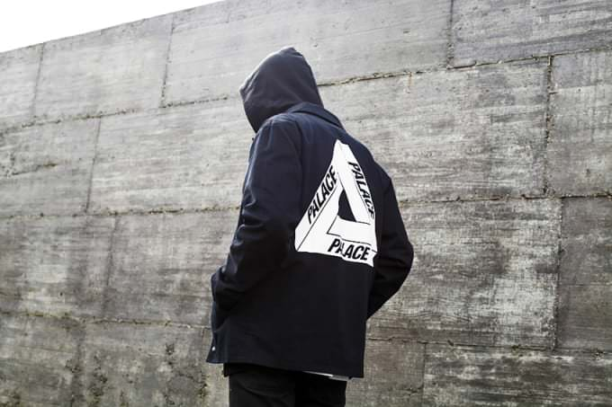
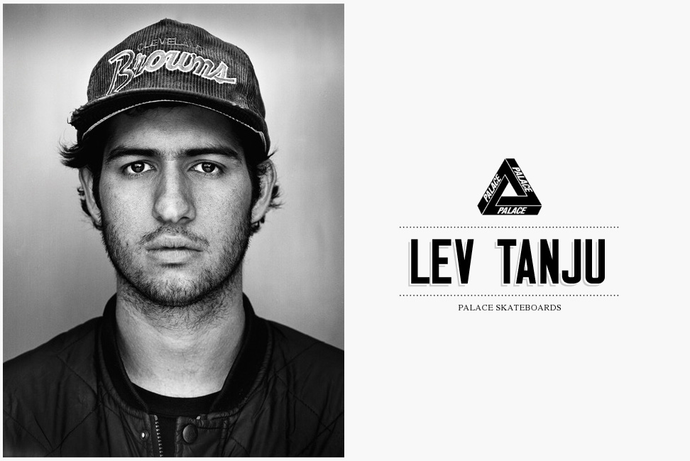
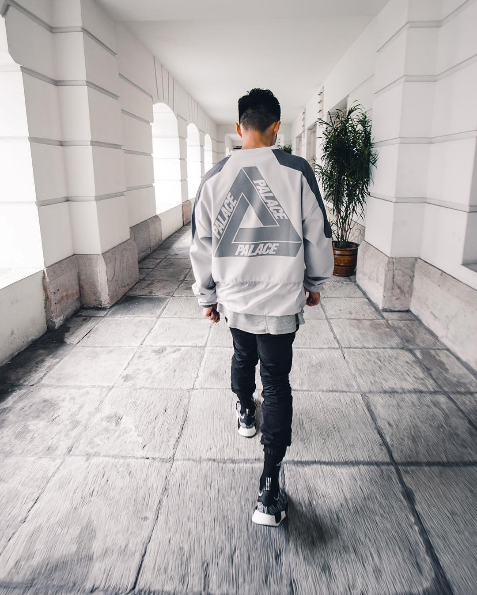

Skatewear and skate brands have had a presence in the UK far before Palace,
but arguably none have had the same international recognition. America has
long dominated skate fashion with established figureheads such as Supreme and
Vans but recently Palace has elevated itself to similar renown and as a result,
highlighted the uniquely-UK subcultures influencing streetwear in Great Britain.


You might not have heard of skate brand Palace, but you will almost certainly
have seen their logo. A triangle with Palace written along each side, it’s spotted
on the backs of hoodies worn by suburban teenagers, on shirts worn by Jay Z, on
boys staring at the big screen in pubs.
Part of Palace’s ability to keep its cool while growing as a business is down
to that unbottleable thing: authenticity. Creator Lev Tanju lives and breathes skate culture,
and talks fondly of spending 12-hour days skating at the Southbank skate
undercroft as a teenager. He started making videos of his friends’ tricks,
and Palace, the label, followed, initially as a way to sponsor skaters, and
named in ironic tribute to the scuzzy flat Tanju lived in at the time.

Tanju He says he rarely “seeds” clothes to celebrities such as West, in the
hope they’ll post a selfie on Instagram: “We make it and that’s it. If you want
it, come to the shop. If someone really nice phones up for a T-shirt, then
of course. If Elton John rang up, I would be like, ‘Sure Elton John.’” Elton
John in a Palace T-shirt? It’s only a matter of time.